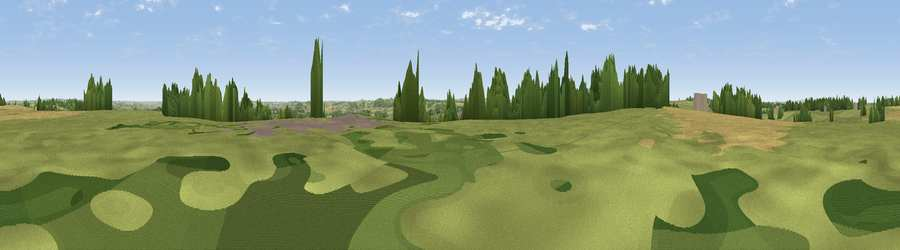

Laughton Hills
#32002 in England · top 46% of its area beats it · near LaughtonThe view, rendered

A 360° render of this exact spot computed from the terrain model, tree cover and land cover — summer colours, afternoon light, calibrated against photographs of famous viewpoints. Real trees, hedges and buildings will differ in detail.
The panorama
Grey silhouette: terrain skyline in each direction (720 bearings, Earth curvature and refraction included). Dashed green: skyline with trees (+15 m) and buildings (+8 m) as obstacles. Blue strip: how far the ground is visible on each bearing.
Where the view opens
Wedge length = distance to the farthest visible ground on that bearing (vegetation-aware). Rings at 10, 25 and 50 km.
What fills the view
55% grassland · 32% cropland · 11% woodland · 2% built-up
Angular shares of the visible panorama (visual magnitude), not map area. Landscape diversity 0.44 (0–1 Shannon).
Key numbers
More beautiful places nearby
The staircase of upgrades: each row has a higher view potential than everything closer. Driving times are estimates from straight-line distance, calibrated against real road routing — check an actual route before setting out.
| Place | Direction | Drive | Score |
|---|---|---|---|
| Viewpoint near Sibbertoft | SSE · 6 km | ~12 min | 48.3 |
| Viewpoint near Sibbertoft | SSE · 6 km | ~13 min | 48.8 |
| Viewpoint near Cold Ashby | SSW · 12 km | ~22 min | 61.7 |
| Viewpoint near Burrough on the Hill | NNE · 26 km | ~42 min | 66.0 |
| Old John | NNW · 27 km | ~43 min | 70.3 |
| Broombriggs Hill | NNW · 30 km | ~47 min | 74.4 |
| Viewpoint near Woodhouse Eaves | NNW · 31 km | ~48 min | 77.7 |
| Viewpoint near Elmley Castle | SW · 84 km | ~108 min | 80.5 |
52.48690, -1.02117 · source: osm peak · position refined by local search. Computed location — check access rights before visiting.